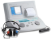

2026年
問題33 耳・聴力・音に関する次の記述のうち，最も不適当なものはどれか．
(1)耳は大別して外耳，中耳，内耳に分けられる．
(2)同じ音でも，聞く人によっては快適な音になったり，不快な音になったりする．
(3)ヒトが聞き取ることができる周波数帯は，約20HZから20,000HZである．
(4)聴力レベルがマイナスの値であれば，基準値からの聴力の低下を意味する．
(5)聴力低下のスクリーニングとして，1,000HZと4,000HZの聴力レベ ルが測定される．
2026年
問題33 正解（4） 頻出度AAA
聴力レベルの値がマイナスとは，小さな音でも聞こえるということで，基準値よりも良いことを意味する．
聴力検査では，オージオメータ（2026-33-1 図参照）を用いてオージオグラムを作成する．各周波数ごとに，被験者に音圧レベルの大きい音から始めて，次第に小さい音を聞かせ，聞こえなくなる直前の音圧レベルを聴力レベル［dB］とする．標準の聴力が0dBで，聴力レベルがプラスでは標準の聴力より劣り，マイナスであれば聴力がよいことを意味する．
2026-33-1図 オージオメーター

出典 リオン株式会社
https://www.rion.co.jp/news/html/news_070901_1.html
-(1) 外耳，中耳，内耳2026-33-2図参照．
出典 たなか耳鼻咽喉科
http://www.tanaka-ent.or.jp/mimi-kozo.html を基に作成